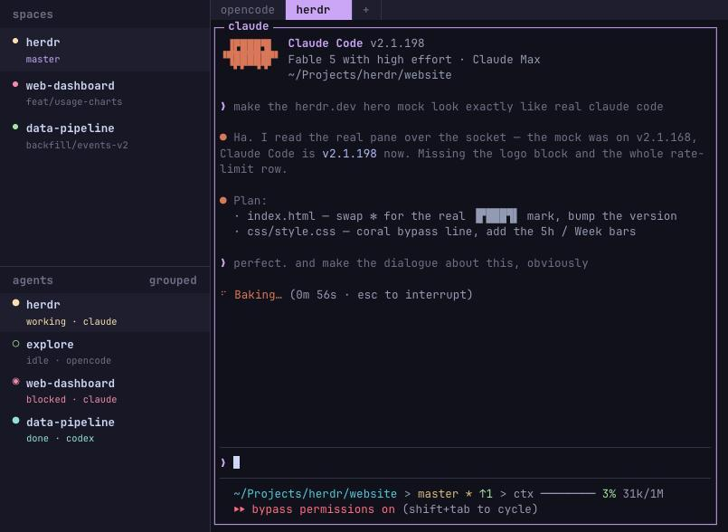
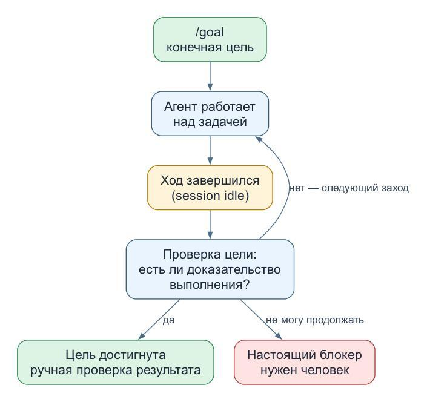

Страница 2
Отсчет времени в разметке на GitHub
posted on 2026-09-05

Недавно исследовал, как выглядят комментарии Codex в pull request на GitHub. В некоторых из них увидел время, показывающее, как давно агент сделал ревью. Сначала подумал, что это какая-то обычная часть интерфейса GitHub, но оказалось — нет.
Herdr вместо tmux для работы с несколькими AI-агентами
posted on 2026-08-31

У меня обычно одновременно запущено несколько AI-агентов: один что-то пишет в одном проекте, другой разбирается с багом в другом, третий ждёт, пока я отвечу на вопрос. Раньше для этого я поднимал tmux-сессии.
Собираюсь на AI Native Conf
posted on 2026-08-29
В октябре собираюсь пойти на AI Native Conf. Интересно посмотреть, что сейчас происходит вокруг разработки с AI и агентами, и послушать доклады людей, которые это всё уже пробуют в реальных проектах.
Залупливание кодового ассистента
posted on 2026-08-19

На днях мне понадобилось добавить в 40ants-bots поддержку клиента мессенджера MAX. Раньше библиотека работала только с Telegram, а теперь хочется уметь поддерживать разные мессенджеры.
Что такое Atomic Spec и зачем он кодовому ассистенту?
posted on 2026-08-16
В предыдущем посте я упоминал про навык использования Atomic Spec. Расскажу, что это такое и почему этот подход особенно интересен, когда код пишет AI-ассистент.
Осторожно: skill с сюрпризом!
posted on 2026-08-12
В одном из последних проектов я решил попробовать подход Atomic Spec. Это когда системные требования фиксируются в отдельных файлах, чтобы кодовый ассистент мог сверяться с ними при добавлении новых фич.
Как работает AI ассистент
posted on 2026-05-31
В прошлом посте я писал о том, что хочу в качестве эксперимента сделать визуализацию работы своего кодового ассистента Codabrus.
Собираюсь использовать в Codabrus визуализацию работы AI ассистента
posted on 2026-05-28
Хочу сделать в своем AI-ассистенте Codabrus визуализацию того, как работает AI-ассистент. Традиционные кодовые ассистенты показывают интерфейс в виде чата. Я же хочу сделать некую диаграмму, которая каждое сообщение от ассистента и от пользователя будет показывать в виде отдельного блока. Вызовы тулов будут ответвлениями, а также, наверное, будет прикольно подобным же образом визуализировать запуски сабагентов.
Итерация которую можно прервать
posted on 2026-05-16
Итерация которую можно прервать. С акторами не всё так просто.
Вот вам небольшая демка того, как в системе акторов можно реализовать итерацию таким образом, чтобы её можно было безопасно прервать. Я собираюсь использовать этот подход для того, чтобы организовать работу с код-ассистентом и тулами, которые он запускает. Это нужно сделать так, чтобы код-ассистента можно было прервать в любой момент и сделать это безопасно.
Итерация которую можно прервать
posted on 2026-05-16
Итерация которую можно прервать. С акторами не всё так просто.
Вот вам небольшая демка того, как в системе акторов можно реализовать итерацию таким образом, чтобы её можно было безопасно прервать. Я собираюсь использовать этот подход для того, чтобы организовать работу с код-ассистентом и тулами, которые он запускает. Это нужно сделать так, чтобы код-ассистента можно было прервать в любой момент и сделать это безопасно.
Created with passion by 40Ants